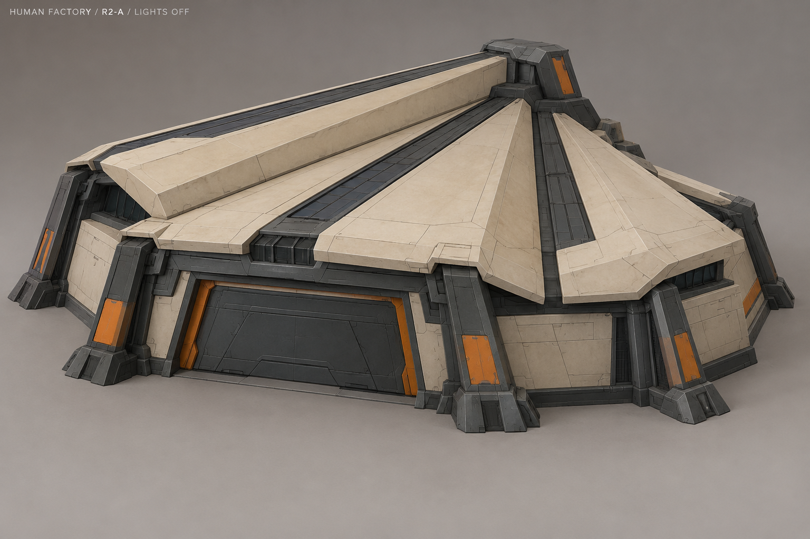
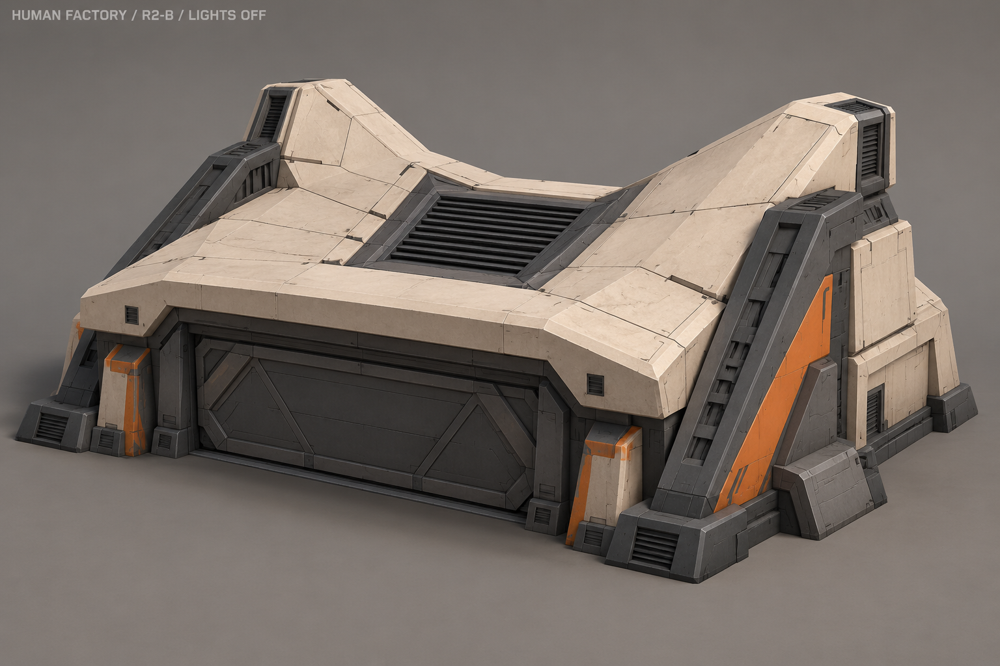
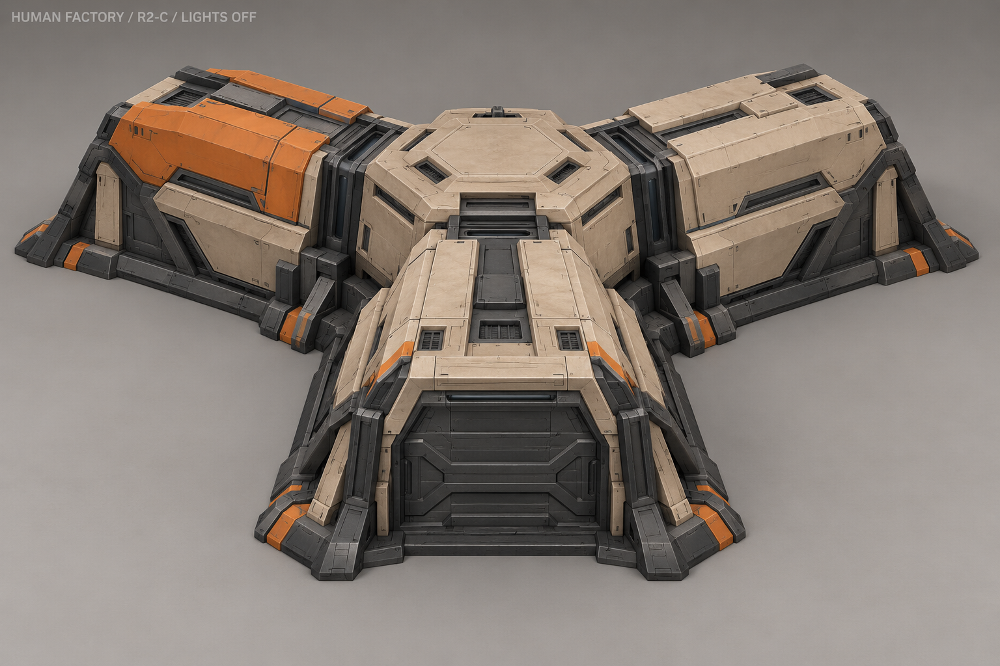
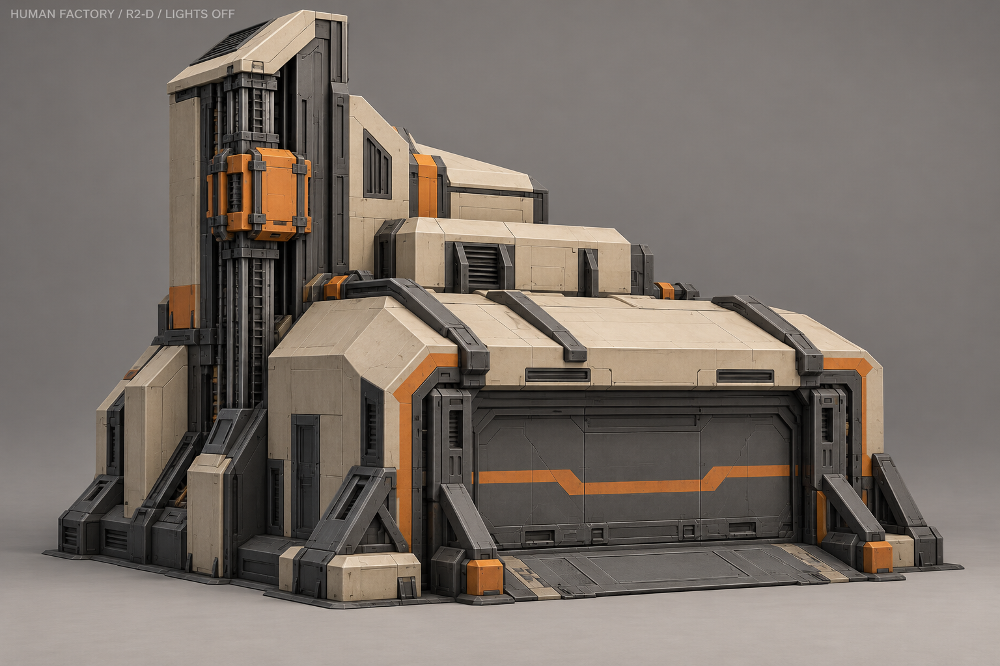
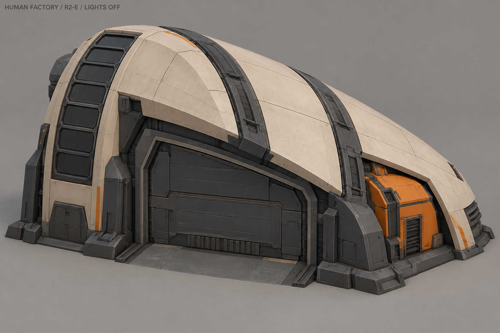
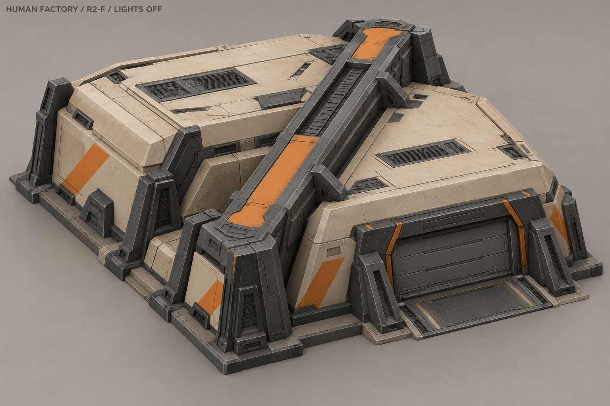
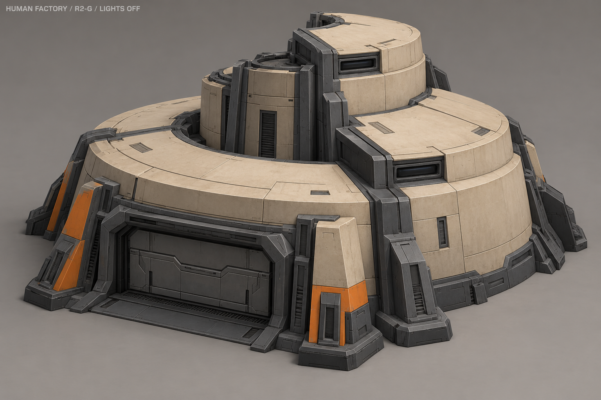
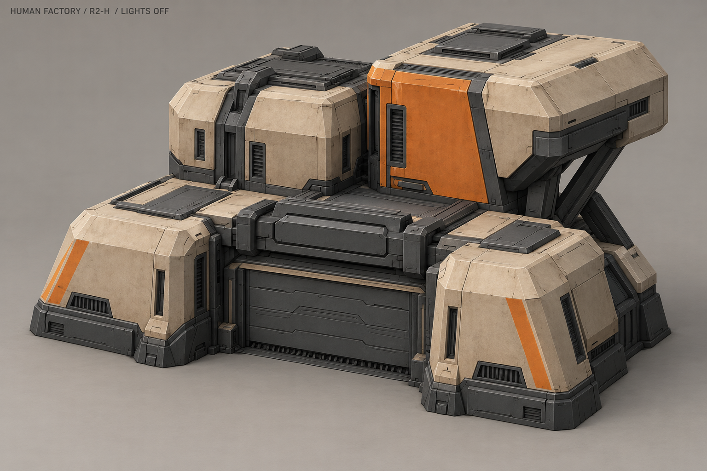

A «Веер»

Три крупных складки крыши расходятся веером к широкому фасаду.
Отдельная схема работы
Волна света вдоль тёмных полос на складках крыши.
Условная схема, не референс для AI-моделирования. Ожидание — покой; производство и исследование — работа одной очереди; отмена — возврат к покою.
B «Седло»

Крыша провисает седлом между поднятыми краями; массивные боковые опоры.
Отдельная схема работы
Короткий подъём и возврат одной вентиляционной створки в седловине.
Условная схема, не референс для AI-моделирования. Ожидание — покой; производство и исследование — работа одной очереди; отмена — возврат к покою.
C «Три пролёта»

Три закрытых производственных крыла сходятся в центральном зале.
Отдельная схема работы
Три группы линз поочерёдно показывают работу крыльев.
Условная схема, не референс для AI-моделирования. Ожидание — покой; производство и исследование — работа одной очереди; отмена — возврат к покою.
D «Вертикальная сборка»

Низкий выпускной зал и высокая сборочная шахта с наружной кареткой.
Отдельная схема работы
Оранжевая каретка совершает короткий вертикальный ход по направляющим.
Условная схема, не референс для AI-моделирования. Ожидание — покой; производство и исследование — работа одной очереди; отмена — возврат к покою.
E «Оболочка»

Асимметричная оболочка: высокое левое плечо и низкий правый край.
Отдельная схема работы
Последовательность световых ячеек на высоком плече оболочки.
Условная схема, не референс для AI-моделирования. Ожидание — покой; производство и исследование — работа одной очереди; отмена — возврат к покою.
F «Диагональный хребет»

Два смещённых цеха связаны толстым диагональным техническим хребтом.
Отдельная схема работы
Бегущая волна по диагностической полосе диагонального хребта.
Условная схема, не референс для AI-моделирования. Ожидание — покой; производство и исследование — работа одной очереди; отмена — возврат к покою.
G «Спиральный цех»

Секции самого корпуса поднимаются по спирали к центральному ядру.
Отдельная схема работы
Три группы линз загораются по кругу. Сам корпус неподвижен.
Условная схема, не референс для AI-моделирования. Ожидание — покой; производство и исследование — работа одной очереди; отмена — возврат к покою.
H «Сдвинутые кассеты»

Четыре сцепленных объёма разной высоты, задняя консоль на диагональной опоре.
Отдельная схема работы
Короткий горизонтальный ход технической плиты над воротами.
Условная схема, не референс для AI-моделирования. Ожидание — покой; производство и исследование — работа одной очереди; отмена — возврат к покою.